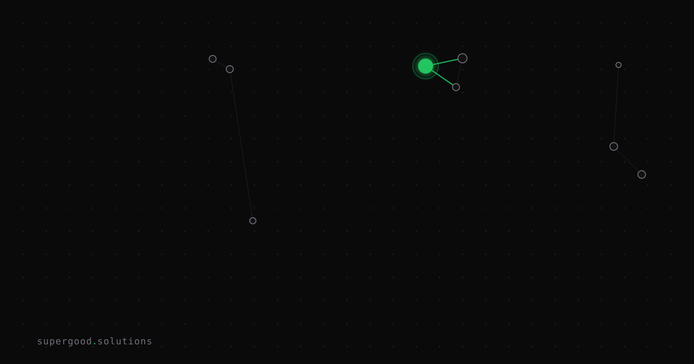

AI, Actually: What "Recursive Self-Improvement" Actually Means (and Doesn't, Yet)
TL;DR: "Recursive self-improvement" has become a Rorschach test — sci-fi people see Skynet, safety people see an existential cliff, and the engineers actually building these systems see something far more mundane and far more useful. Here's what's actually running in production right now, and why the gap between the real thing and the narrative matters for your roadmap.
Key Insight
The real version of recursive self-improvement isn't a model quietly rewriting its own weights in a data center at 3 AM. It's an agent that rewrites a helper function, runs the tests, keeps the version that wins, and repeats — with a human-set stopping condition and a fixed evaluation signal bounding every loop.
That sounds less dramatic. It is also vastly more useful than anything a runaway self-modifier could produce, because it's auditable, stoppable, and deployable today.
Anthropic published numbers in 2026 showing Claude writing more than 80% of the code merged into their own codebase, and a research loop that closed 97% of a benchmark gap in a week — compared to 23% for two human researchers doing the same work. That's recursive self-improvement in production. It's an agent in the Perform → Evaluate → Modify → Redeploy loop, not a model redesigning its own architecture.
Why Teams Miss This
Two failure modes, opposite ends of the same confusion.
Failure mode 1: dismissal. Teams hear "recursive self-improvement" in a conference talk, mentally file it under "AGI risk discourse," and ignore every practical implication. They miss that the bounded version — agents that optimize their own prompts, eval harnesses, and training pipelines — is already closing gaps faster than human researchers.
Failure mode 2: premature fear. Teams read an AI safety thread about self-improvement and start treating the concept as radioactive. They add human approval gates to every agent loop, killing the latency advantage that made the agent worth building in the first place.
The actual line to hold is this: RSI is recursive when the output of one loop changes the mechanism that produces the next loop's output — not just the output itself. An agent that runs the same evaluation every time and just stores results is iterating. An agent that modifies the evaluation function, the prompt, or the toolchain based on what it learned is self-improving. The second is powerful. Neither is unconstrained.
How to Actually Do It
The loop has four stages. Getting them right is the engineering problem.
1. Perform — the agent executes a task (write code, run an experiment, answer a query).
2. Evaluate — a paired evaluator, which can be the same model or a separate one, checks the result against a pre-specified metric. This metric must be defined before the loop starts, not derived from the agent's own reasoning mid-run.
3. Modify — the agent changes something about itself: a system prompt, a tool definition, a chunk of helper code, a data pipeline filter.
4. Redeploy — the modified version replaces the old one. The next pass starts from a stronger baseline.
The evaluate step is what separates RSI from a regular retry loop. Without a metric that can distinguish "this version is better" from "this version just tried harder," you get drift, not improvement.
The guardrails that make this safe to run in production:
MAX_ITERATIONS = 10 # hard cap, not a soft suggestion
TOKEN_BUDGET = 200_000 # trip the circuit breaker on runaway loops
IMPROVEMENT_THRESHOLD = 0.02 # only keep a change if it moves the metric by >2%
ROLLBACK_ON_REGRESSION = TrueSkip any of those and you're not running RSI — you're running a loop that will eventually talk itself into believing a bad change is a good one.
The eval harness is the real moat here. Models are commodities at this point. A team with a rigorous, fast, reproducible evaluation pipeline can close benchmark gaps that a team with a better model but a sloppy eval harness cannot. This is why the frontier labs are investing so heavily in evals-as-infrastructure. The harness, not the weights, is what the self-improvement loop is actually optimizing against.
What We've Learned
Pick one loop in your stack this quarter and make it RSI-shaped. The simplest version: take an agent that writes code, add a step where it also rewrites its own system prompt based on which prompt variants produced tests that passed, and cap it at five iterations. Run it for two weeks and measure whether the pass rate improves without human intervention.
If it does, you've shipped a working version of recursive self-improvement, not the sci-fi kind.
Sources
- Recursive self-improvement in agentic AI (2026 guide) — Data Science Dojo; concrete breakdown of the four-stage loop and guardrail patterns
- Anthropic Evaluations research — Anthropic's published work on evals-as-infrastructure
- Alignment faking in large language models — Anthropic + Redwood Research; why a fixed evaluation signal matters for trust in self-modifying systems
- Loop engineering design patterns — iteration caps, token budgets, and circuit breakers for agentic loops
Have a specific workflow in mind?
Bring it to a Quick Scan — a live working session where we'll tell you honestly whether it should be an agent, a workflow, or left alone, before you spend a dollar building it. You get 3 prioritized recommendations on the call, a one-page summary after, and the $500 credited toward any engagement within 30 days.
Get new posts + practical agent-ops notes
One email when something new goes up. No nurture sequence, no spam — unsubscribe whenever you want.